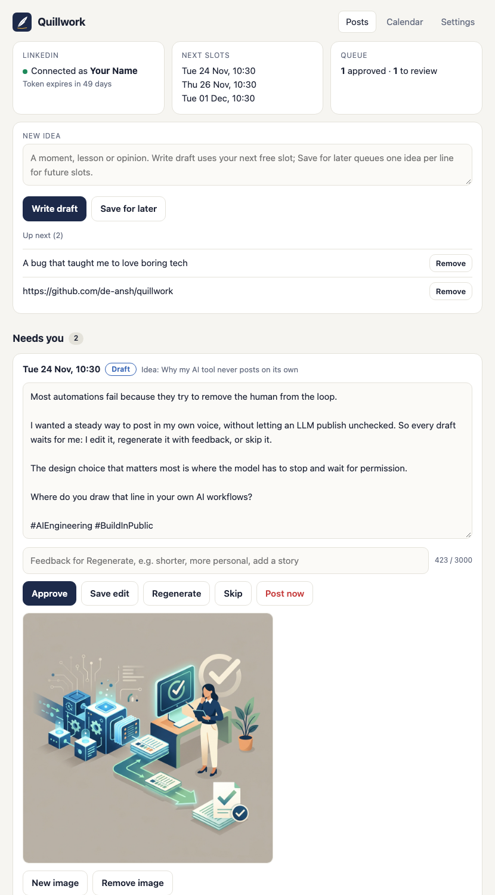
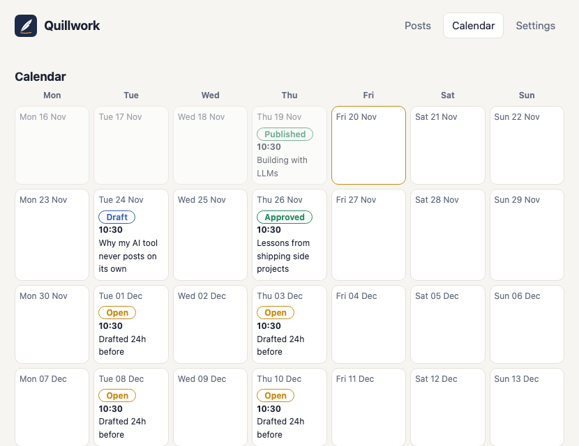

Your ideas, written in your voice,
posted on your schedule.
Quillwork is a small, self-hosted LinkedIn writing assistant. AI drafts the post in your voice, you approve it, and it goes live at the time you picked. It runs on your own computer.
Get startedView sourceHow it works
Your background, voice, audience, format and topics, in one settings page.
Choose posting days and times once. A draft is ready a day before each slot.
Edit it, regenerate it with feedback, skip it, or approve it. Nothing posts without your approval.
Approved posts go to your LinkedIn profile at the scheduled time.
A quick tour


What you get
Drafts copy the rhythm of posts you edited and published, and remember your Regenerate feedback.
Save ideas for later. Each slot uses the next one, or rotates through your topics.
Paste an article or repo URL and the draft is built from what the page actually says.
Add a clean illustration to any draft. It is uploaded with the post.
Published, approved, draft and open slots for the next five weeks at a glance.
A 280-character version of each post, ready to share on X in one click.
Missing figures become [placeholders] you must fill in before a post can go out.
A nudge to reply to comments an hour after posting, and a daily backup of your posts.
Runs on localhost. Posts and settings stay in a local SQLite file.
One Python file built with FastAPI and Gemini. Easy to read and change.
Setup
- Get a Gemini API key from Google AI Studio.
- Create a LinkedIn developer app with Sign In with LinkedIn using OpenID Connect and Share on LinkedIn, and add the redirect URL
http://localhost:8787/callback. - Clone the repo, add your keys, and run it:
git clone https://github.com/de-ansh/quillwork && cd quillwork python3 -m venv .venv && .venv/bin/pip install -r requirements.txt cp .env.example .env # GEMINI_API_KEY, LINKEDIN_CLIENT_ID, LINKEDIN_CLIENT_SECRET .venv/bin/python app.py # open http://localhost:8787